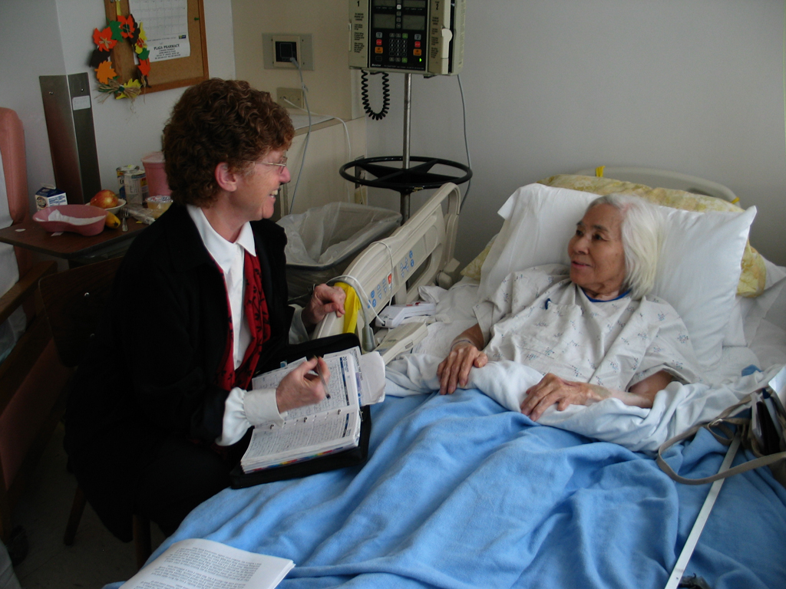

|
Tell Me A Story - Movie
Produced by: Manjusha Films
Director/Camera/Editor: Hemal Trivedi
Location: Gainesville, Florida
Year: 2006
Length: 25:36
This was my thesis film when I was studying MFA in documentary
films at the Documentary Institute of University of Florida.
The film profiles an unusual friendship between a Jewish oral
historian and a Japanese MIT Nuclear Physicist as the historian
helps the physicist recover from depression by sharing memories.
The film was shown at several oral history seminars and medical
conferences. It also played at a couple of film festivals on
ageing and Asian societies.
|